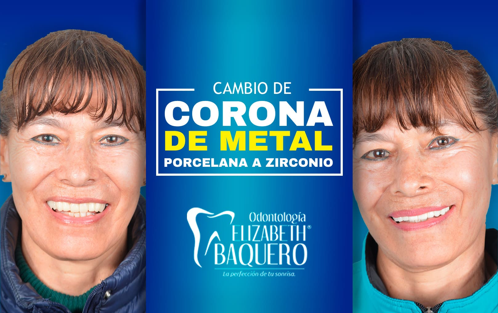
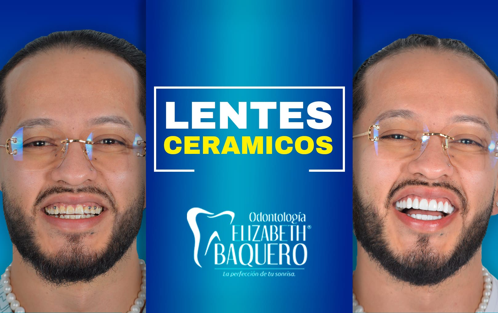
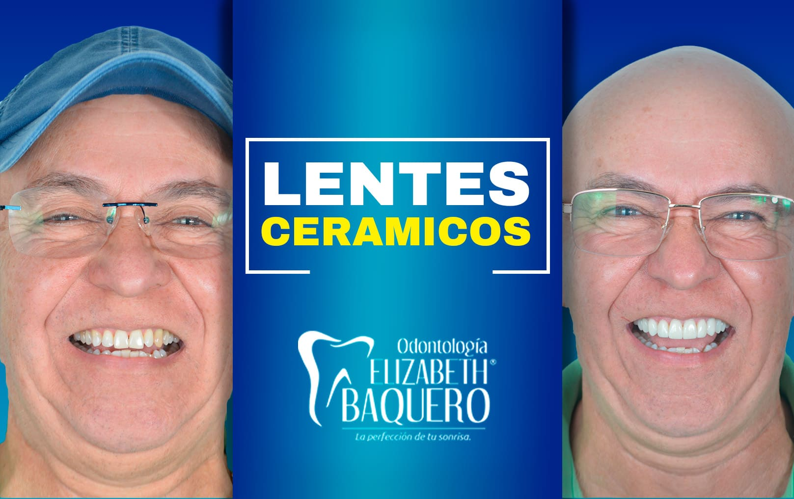
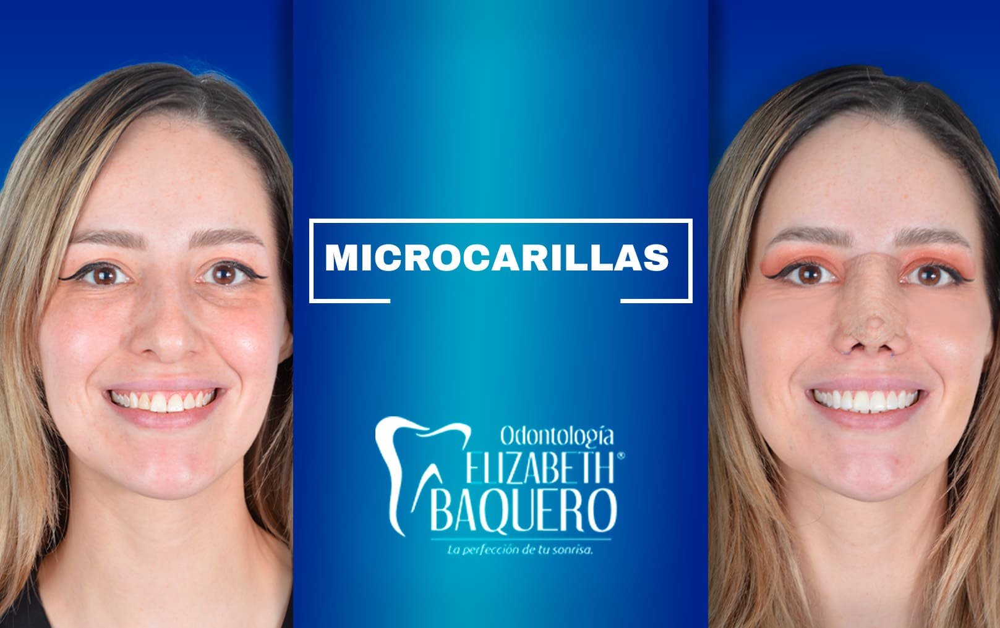
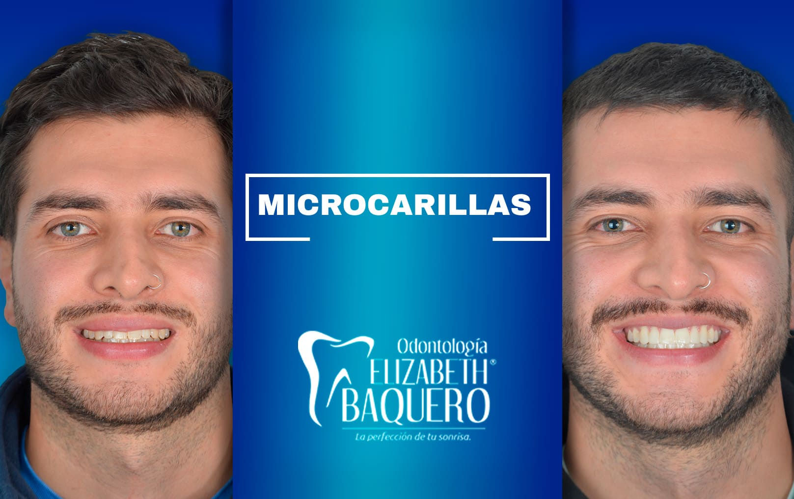
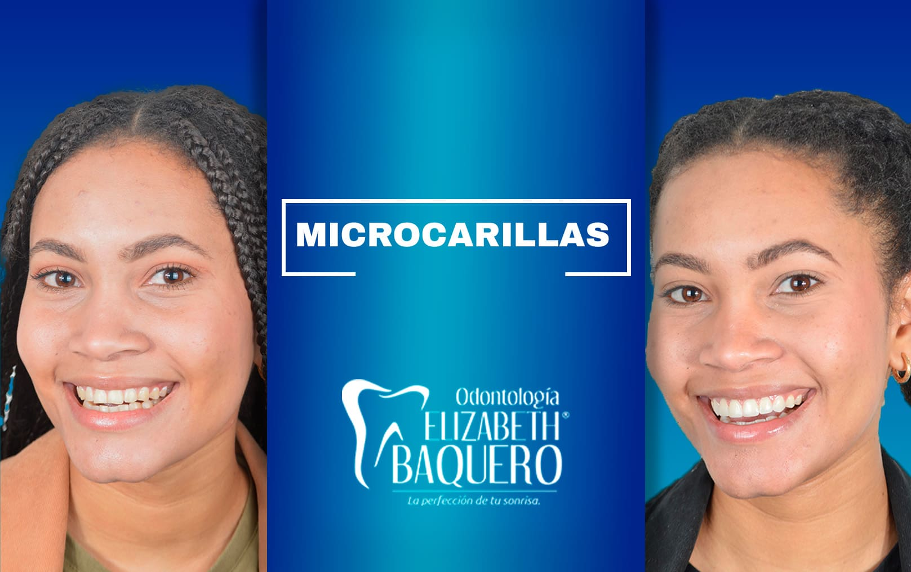
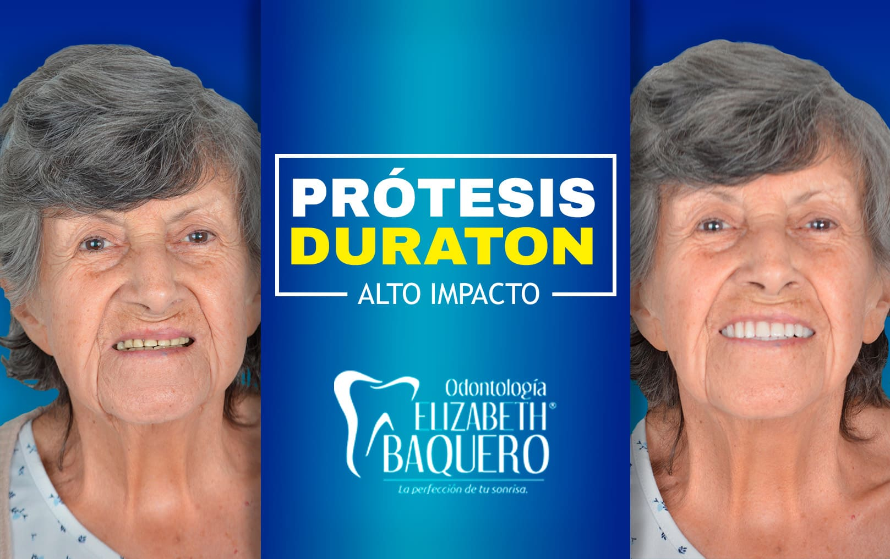
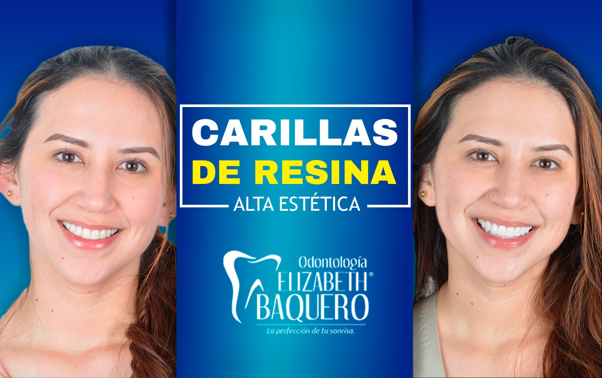
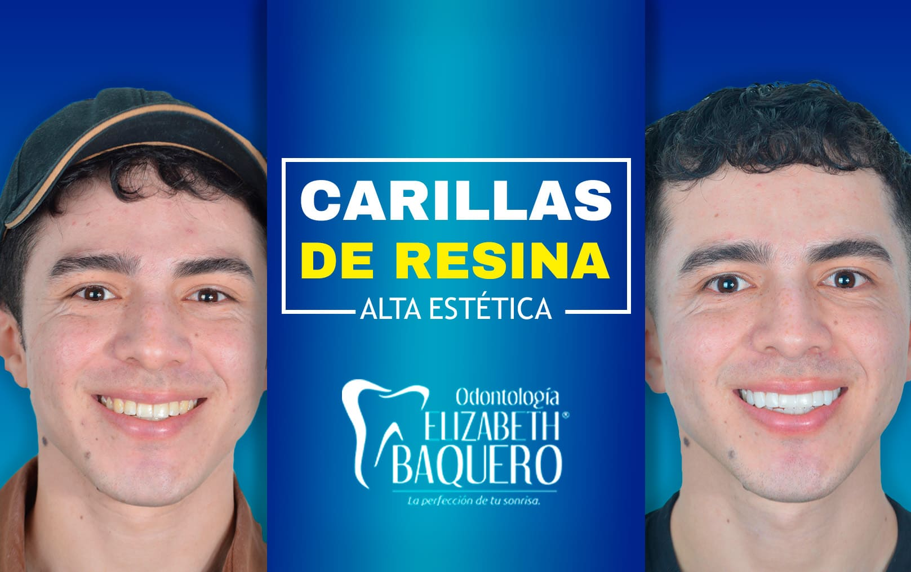
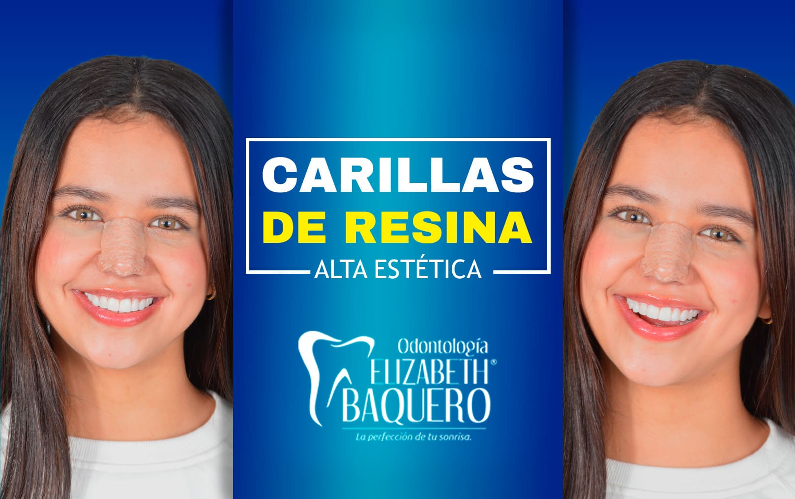

Casos de Exito
En Odontología Elizabeth Baquero nos preocupamos por la salud de nuestros pacientes y la excelencia en nuestros tratamientos.
Por eso, te presentamos algunos de nuestros casos de éxito.










TRATAMIENTOS

BICHECTOMÍA

EXODONCIAS

ACLARAMIENTO

LIMPIEZA PROFESIONAL

ORTODONCIA INVISIBLE

IMPLANTES

PRÓTESIS DENTALES

CORONAS LIBRES DE METAL

ARMONIZACIÓN GINGIVAL

DISEÑO DE SONRISA

OPERATORIA (RESINAS)
BICHECTOMÍA
La bichectomía es un procedimiento quirúrgico el cual consiste en la extracción de las bolsas de bichat que se ubican en cada mejilla generando un aspecto facial más delgado.
Es un procedimiento ambulatorio, de aproximadamente 40 minutos de duración. No genera incapacidad. No deja cicatriz. Es estable en el tiempo. Requiere cita de valoración previa.
EXODONCIAS
La exodoncia es un procedimiento quirúrgico mediante el cual se extrae un diente de la cavidad oral. Existen distintas razones por las cuales se necesita extraer un diente como lo son: lesiones cariosas avanzadas que no permiten rehabilitación, lesiones periapicales, motivos ortodonticos, fracturas, entre otros.
ACLARAMIENTO
El aclaramiento dental también llamado Blanqueamiento dental, es un procedimiento estético el cual busca eliminar manchas amarillentas generando una tonalidad visiblemente más clara y llamativa.
En Odontología Elizabeth Baquero manejamos dos clases de aclaramiento
y diferentes paquetes para lograr una mejor tonalidad:
-El aclaramiento casero, que consta de una férula personalizada y un
tratamiento de 2 horas por 12 días que realiza el paciente
independientemente.
-El aclaramiento clínico con láser, el cual se realiza máximo 3
sesiones cada una de 15 minutos en un mismo día.
Es necesario una cita de valoración previa.
LIMPIEZA PROFESIONAL
La limpieza dental profesional mejor llamado raspaje y alisado radicular con pulido coronal, se realiza con un equipo llamado ultrasonido el cual emite vibraciones que permiten desprender el sarro o cálculo que se ha ido acumulando en la superficie dental y espacios de difícil acceso para el cepillado dental común.
Incluye:
-Elementos de protección personal
-Educación y motivación en higiene oral
-Ultrasonido casi completo
-Profilaxis
-Desmanchamient
ORTODONCIA INVISIBLE
La ortodoncia invisible es una nueva técnica que se basa en el uso de alineadores transparentes en boca, mientras dientes (de la misma forma que una ortodoncista convencional la haría) y sin afectar tu estética.
Estos alineadores son de plástico transparente fabricados en 3D por un software especial el cual realiza una simulación de tus dientes y estructuras adyacentes, y de esta manera imprime los alineadores con los movimientos precisos para alcanzar la Perfección de tu sonrisa.
Los alineadores se cambian cada 15 días aproximadamente según cada paciente. Se necesita de valoración y estudio previo, ya que no todos los casos de ortodoncia son aptos para esta técnica.
IMPLANTES
Los implantes dentales son una técnica de rehabilitación que permite reemplazar un diente o varios dientes perdidos, mediante la colocación quirúrgica de un tornillo de titanio o material biocompatible, que ejercen en el hueso maxilar/mandibular la función de la raíz dental.
Es un procedimiento con una tasa de éxito de hasta el 95%, de excelente durabilidad en el tiempo e ideal para restituir las funciones masticatorias, fonéticas y estéticas del paciente.
PROTESÍS DENTALES
Las prótesis dentales son estructuras que nos permiten reemplazar los dientes que han perdido gran parte de estructura dental o que se han perdido por completo. Dentro de este grupo encontramos las prótesis dentales removibles, prótesis dentales fijas y las prótesis totales.
una estructura de acrílico que se sorporta sobre dientes naturales y tejidos adyacentes. Las prótesis fijas son coronas de forma exacta al diente a reemplazar que se sujetan sobre tejido dental restante, raíces sanas o con tratamiento de conducto e implantes. Los materiales pueden variar y de este depende una más alta naturalidad.
Las prótesis totales buscan reemplazar la totalidad de los dientes perdidos en una arcada o ambas, evitando así la pérdida acelerada de hueso y devolviendo al tiempo estética y función al paciente.
CORONAS LIBRES DE METAL
Las coronas libres de metal son un tipo de prótesis fija que se sostiene sobre dientes sanos presentes en boca o sobre implantes para reemplazar ese espacio dental, y que ofrecen gran resistencia, durabilidad y naturalidad por su característica de ser libre de metal.
ARMONIZACIÓN GINGIVAL
La armonización gingival también llamada Gingivoplastia o recorte de encías es un procedimiento que permite modificar la forma de la encía, generando un mejor contorno, forma y tamaño a los dientes, logrando una mejor estética sin tocar el tejido dental.
En Odontología Elizabeth Baquero realizamos la armonización gingival con técnica de Electrobisturi, haciendo de este, un procedimiento sencillo, rápido, seguro, disminuyendo el sangrado y acelerando la cicatrización.
DISEÑO DE SONRISA
El tratamiento popularmente llamado “Diseño de sonrisa” trata de un conjunto de procedimientos que buscan perfeccionar la sonrisa: mejorando forma, tamaño, color y hasta posición de los dientes; y de esta manera alcanzar una armonía entre estos y las características faciales del paciente. Dentro de estos procedimientos encontramos:
-La armonización gingival
-El aclaramiento dental
-Carillas
-Lentes cerámicos
-Bordes estéticos
OPERATORIA (RESINAS)
Las resinas son restauraciones que se utilizan para devolver estética
natural y función a un diente que se ha visto afectado por lesiones
cariosas, lesiones cervicales no cariosas o traumas dentales. Este
procedimiento es indoloro, rápido y con gran tasa de éxito en tiempo.
Incluye:
-Desfocalización cariosa
-Resina propiamente dicha
NUESTRAS ESPECIALIDADES


FACILIDADES DE PAGO

CONTÁCTENOS
¿ TE LLAMAMOS ?
Deja tus datos de contacto y uno de
nuestros expertos se comunicará contigo.


Nuestras ubicaciones
Horarios:
Lunes a Viernes de 8:00 a 19:00
Sábados de 8:00 a 16:00